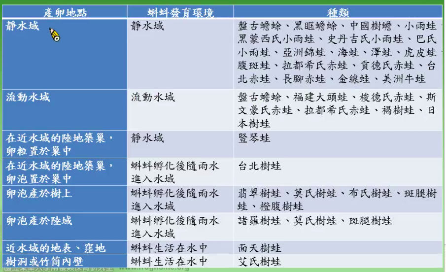

Title: [兩棲課程] 生殖策略
生殖週期 / Reproductive Cycle
- 無足類: 2 年一次
- 有尾類: 2 年或 1 年一次
- 無尾類: 潮溼的熱帶地區顆連續繁殖, 1 年多次產卵; 季節性乾或冷的地區, 在繁殖季繁殖
- 1 年生殖 1-80,000 子代
影響生殖的因素
- 內分泌: 雄性激素 (雄), 雌性激素, 黃體素 (雌)...
-
外在因素:
- 荷爾蒙變化收環境影響
- 溫度影響配子
- 亞熱帶及熱帶: 睾丸全年產生精子
- 溫帶及高山: 低溫抑制精子產生
- 繁殖季節收降雨影響
- 營養狀態影響產卵數及卵的大小
- 第二性徵隨季節變化
無尾目的生殖週期
- 熱帶及亞熱帶: 全年生殖, 降雨 是刺激生殖的主要外在因子
- 溫帶: 主要受溫度及降雨影響, 呈現週期
- 繁殖開始的早晚受海拔高度影響
- 也可能受光或水中藻類味道影響
- 臺灣 15 種蛙類研究過
台灣蛙類繁殖季節
- 全年: 屏東的小雨蛙, 拉都, 斯文豪, 翡翠及中海拔的莫氏
- 春夏: 面天, 艾氏, 布氏, 中國樹蟾, 諸羅, 金線, 低海拔的莫氏, 腹斑, 橙腹, 褐樹蛙
- 秋冬春: 南部及東部的莫氏, 台北及梭德氏
- 同種蛙的繁殖也受海拔影響: 高海拔的莫氏在夏天繁殖, 低海拔在秋冬
溫度和雨量的影響
- 同時受溫度和雨量影響: 台北, 面天, 翡翠, 低海拔的莫氏, 黑眶, 艾氏 => 溫暖潮溼的天氣活躍
- 溫度有關, 雨量無關: 在溪流的斯文豪, 褐樹蛙, 池塘的金線蛙 => 或許是水分來源穩定
- 雨量有關, 溫度無關: 拉都, 中國樹蟾, 橙腹, 小雨蛙 => 推測利用降雨積水繁殖
生殖模式 / Reproductive Mode
- 無足類: 體內受精, 75% 胎生, 卵生 (陸地產卵, 水棲幼體)
演化趨勢: 卵生 -> 直接發育 -> 胎生
- 有尾類: 體外受精-卵及幼體水棲, 體內受精: 90 %
- 無尾類: 體外受精, 體內受精
-
29 種生殖模式: 3 大類
- 卵產於水域
- 卵產於陸域或樹上
- 卵留在母體輸卵管內
-
台灣有 33 種模式

資料來源: 楊姨懿如兩棲數位課程
無尾類的親方照顧
- 避免天敵或同類捕食: 玻璃蛙 (擬態)
- 移除死亡或受感染的卵
- 讓產於陸域的卵保持潮溼, ex: 染色箭毒蛙 雄蛙定期在卵上排尿
- 非洲牛蛙挖地道讓蝌蚪游到水邊
- 鏟鼻蛙產卵於地洞, 蝌蚪孵化後雌蛙挖地道通道水邊
- 攜帶卵及幼體: 負子蟾, 鏟足蟾
- 背部囊帶: 袋鼠蛙 (Marsupial frogs)
-
台灣艾氏樹蛙, 蝌蚪要雌蛙大腿外側, 雌蛙會生沒受精的卵給蝌蚪吃
-
關永才教授研究:
- 一直蝌蚪平均 56 天的生長期會吃 87 顆卵
- 一個竹桶平均 25 隻蝌蚪
- 平均吃掉 25x87 顆以上的卵
- 雌蛙覓巢, 平均 8 天回來一次
- 實驗:
- 換蝌蚪 -> 找得到
- 竹筒移動一公尺 -> 找得到
- 改變高度 -> 死亡率上升
- 覓巢靠的是視覺
生殖行爲 / Reproductive Behavior
雄性好鬥, 交配行爲依賴雌性反應
交配地點
找到交配地點的方式:
- 聽覺: 50-70m
- 嗅覺: 藻類 (味道)
- 視覺: 天空 celestial cues (sun) 趨光性, 松果體 (pineal body) 爲光接受器
- 趨他性 Geotatic, 趨溼性 Hygrotatic response
第二性徵
終生或繁殖期出現
- 體型
- 腺體發育
- 皮膚質地 (雄蛙有鳴囊)
- 皮膚裝飾
- 鳴囊
- 顏色
蠑螈
- 通常雌性比雄性大
- 雄性肛門膨大, 有肛門腺 (cloacal glands)
繁殖期的蠑螈外型:
- 皮膚光華
- 尾鰭及背鰭更發達, 顏色鮮明, ex:冠蠑螈 作爲種間辨識, 提供視覺, 化學感覺及觸覺線索
無尾類
- 體型 雌 > 雄
- 雄性較大
- 打架
- 齒突或刺 (福建大頭蛙, 下顎齒突)
- 繁殖贅生物 Nuptial Excrescences, 雄蛙表皮或真皮組織特化 雄蛙婚墊, 蟾蜍的婚刺
- 雄蛙前臂比雌蛙發達 (拉都很明顯)
- 雄蛙腺體發達: 腹斑蛙的肩腺, 貢德臂腺 發達
- 雌蟾蜍背部顆粒比較粗糙 (其他種類不一定)
- 表皮特化: 非洲雄的毛蛙
- 肛門特化: 雄性尾蟾 (體內受精, 當作交配器), 負子蟾肛門特化
- 顏色
- 雄性鳴囊色素沉澱
- 蟾蜍雄性, 雌性顏色不同 (金蟾蜍)
- 鳴叫時改變顏色: 日本樹蛙, 褐樹蛙 -> 公青蛙變金色
- 鼓膜 (聽聲音, 也可以幫助聲音傳播, 像 speaker 一樣)
- 赤蛙的雄蛙鼓膜比雌蛙大, 或一樣
- 某些雄蛙耳柱骨突起
交配行爲 Courtship Behavior
- 無足類資料很少
- 有尾類:
- 水中體外受精, 無交配: 小鯢科
- 體內受精: 每一科都有獨特行爲
- 蠑螈科: 各種觸覺接觸，姿勢, 有的像跳舞一樣, 換位置
- 無尾科:
- 確認對象
- 雄蛙宣告叫聲 Advertisement calls
- 嗅覺及視覺的展示不重要
- 觸覺
- 通常有雌性接近雄性
- 交配前及交配後行爲
- 蛙類抱接, 假交配 (台灣的都是腋下, 雄蛙的手在母蛙腋下)
- 確認對象
受精及產卵 (Fertilization and Oviposition)
體外受精:
- 有尾類產卵於水中
-
無尾類產卵及受精由雌性及雄性同步完成
卵是一顆一顆受精, 公的按一下母蛙, 母蛙把卵產在卵泡裡, 公的腳擡起來, 把精子撒在卵泡上, 母蛙用腳把卵體到泡沫裡
- 泡沫卵塊
ex: 翡翠樹蛙, 母蛙抱著公蛙走到其他現有卵泡那邊產在一起 (安全, 保留體力?), 水不夠的話, 母的背公的再跳入水中用肛門吸水, 在再回來繼續產
性擇
交配成功 Mating Success:
- 操作性比例偏雄性 (Operational sex radio) 時 [就是同一時間公的比較多], 雄性間變異大 [有的公的可以很多次, 有的沒機會]
- 猛爆性 (Explosive) 及短時間繁殖種類, ex: 史丹吉氏小雨蛙, 雄蛙間差異小
- 繁殖季長, 雄蛙有領域種類 (Male territoriality): 雄蛙重複交配次數高, ex: 台北樹蛙, 10-3月繁殖, 有的公蛙可以交配 6 次
性防禦 Sexual Defence:
- 雄性間競爭: 鳴叫, 咬追
- 干擾 (Interference) 及攔截 (Intercept)
- 長時間交配 (Prolonged amplexus): 12-125 days
- 在抵達繁殖地點前已經成對
性干擾 Sexual Interference:
別人的失敗就是我的成功
- 蠑螈
- 偷雌性
- 中斷對手釋出精莢
- 蓋住對手的精莢
-
欺騙對手排除無利可圖的精莢
-
無尾類
- 衛星行爲 Satellite behavior, 或是性寄生 Sexual parasitism
- 衛星雄蛙等待鳴叫雄蛙交配後空下來的鳴叫位置或領域
- 衛星雄蛙攔截雌蛙
- 獲得 (一起) 交配機會, ex: 台北樹蛙一妻多夫, 產卵會呼朋引伴, 一起產
生殖干擾 Reproductive Interference:
- 干擾卵或幼體發育
- 同種食卵
- 可能出現於雄性或雌性
卵及蝌蚪的發育
台灣蛙類產卵頻度

資料來源: 楊姨懿如兩棲數位課程
台灣蛙類及蝌蚪發育期
卵期幾乎都是 2 星期內, 臺北樹蛙的蝌蚪期很久, 可以過冬

資料來源: 楊姨懿如兩棲數位課程
生殖努力 Reproductive effort
腹斑蛙很快 11.6 min, 打卵泡的很慢, 諸羅樹蛙要 8hr20min
資料來源: 楊姨懿如兩棲數位課程